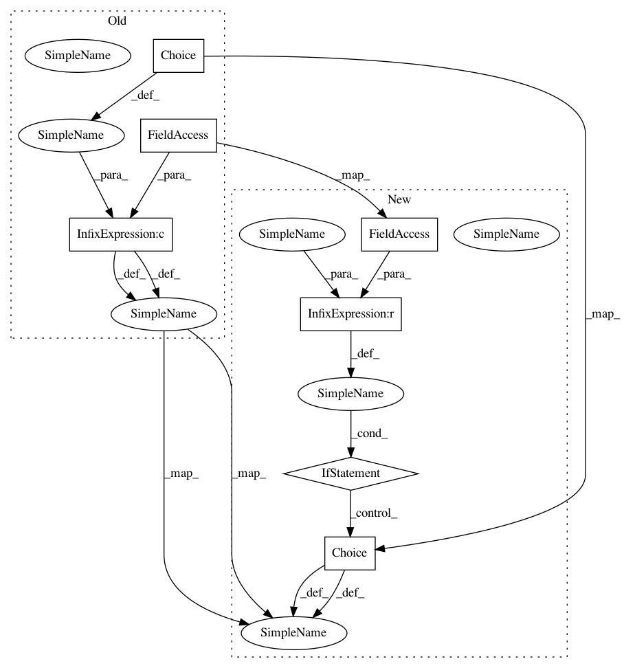

b39e8141557c102aada6d48e9d7f2fc334d8aa1b,autokeras/hypermodel/head.py,ClassificationHead,build,#ClassificationHead#,111
Before Change
output_node = input_node
if len(output_node.shape) > 2:
dropout_rate = self.dropout_rate or hp.Choice("dropout_rate",
[0.0, 0.25, 0.5],
default=0)
if dropout_rate > 0:
output_node = tf.keras.layers.Dropout(dropout_rate)(output_node)
output_node = block_module.SpatialReduction().build(hp, output_node)
output_node = tf.keras.layers.Dense(self.output_shape[-1])(output_node)
After Change
if len(output_node.shape) > 2:
output_node = block_module.SpatialReduction().build(hp, output_node)
if self.dropout_rate is not None:
dropout_rate = self.dropout_rate
else:
dropout_rate = hp.Choice("dropout_rate", [0.0, 0.25, 0.5], default=0)
if dropout_rate > 0:
output_node = tf.keras.layers.Dropout(dropout_rate)(output_node)
output_node = tf.keras.layers.Dense(self.output_shape[-1])(output_node)
if self.loss == "binary_crossentropy":
In pattern: SUPERPATTERN
Frequency: 3
Non-data size: 7
Instances
Project Name: keras-team/autokeras
Commit Name: b39e8141557c102aada6d48e9d7f2fc334d8aa1b
Time: 2020-01-16
Author: jhfjhfj1@gmail.com
File Name: autokeras/hypermodel/head.py
Class Name: ClassificationHead
Method Name: build
Project Name: keras-team/autokeras
Commit Name: b39e8141557c102aada6d48e9d7f2fc334d8aa1b
Time: 2020-01-16
Author: jhfjhfj1@gmail.com
File Name: autokeras/hypermodel/block.py
Class Name: DenseBlock
Method Name: build
Project Name: keras-team/autokeras
Commit Name: b39e8141557c102aada6d48e9d7f2fc334d8aa1b
Time: 2020-01-16
Author: jhfjhfj1@gmail.com
File Name: autokeras/hypermodel/block.py
Class Name: EmbeddingBlock
Method Name: build